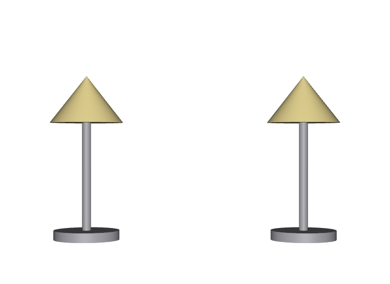

入口のファイルに形を直接書く
中身を開かずに読む、ということができなくなります。形は必ずPayloadの先へ置きます。
STEP 68 · PIPELINE
「ここから入ってください」という一枚を用意します
今日これだけ
公式情報に基づく説明
Assetを外から使うとき、最初に開かれるファイルをEntry Pointと呼びます。Entry Pointの役割は、そのAssetが何であるかを示すことと、中身へつなぐことの2つです。中身そのものはSTEP 41 Payloadの先へ置きます。こうすると、使う側は中身を開かずに、名前・種別・バージョンといった情報だけを読めます。
USDA
#usda 1.0
(
defaultPrim = "Lamp"
metersPerUnit = 1
upAxis = "Y"
)
def Xform "Lamp" (
kind = "component"
payload = @lamp_contents.usda@</Lamp>
)
{
custom string academy:assetName = "Lamp"
custom string academy:version = "1.0"
double3 xformOp:translate = (0, 0, 0)
uniform token[] xformOpOrder = ["xformOp:translate"]
}このファイルには形が一つもありません。あるのは4つだけです。defaultPrimで入口を示し、kind = "component"で再利用の単位だと宣言し、payloadで中身へつなぎ、academy:で始まるSTEP 10 Custom Propertyで自分が何かを名乗っています。
USDA
def Xform "World"
{
def "Lamp_1" (
references = @lamp.usda@
)
{
double3 xformOp:translate = (-1.4, -1, 0)
uniform token[] xformOpOrder = ["xformOp:translate"]
}
def "Lamp_2" (
references = @lamp.usda@
)
{
double3 xformOp:translate = (1.4, -1, 0)
uniform token[] xformOpOrder = ["xformOp:translate"]
}
}使う側が知っているのはファイル名だけです。中がどう作られているか、どのファイルに分かれているかは一切書きません。これがSTEP 51 Encapsulationで扱った境界です。
結果

lamp.usdaという1行を書いただけですが、形も色も組み上がっています。examples/lesson-47/scene.usda / Apple USD Tools 0.25.2 のusdrecord（Hydra Storm・Metal）/ macOS 26.5.2・Apple M4確かめる
from pxr import Usd
# Payloadを一つも開かずにシーンを読む
stage = Usd.Stage.Open("scene.usda", Usd.Stage.LoadNone)
lamp = stage.GetPrimAtPath("/World/Lamp_1")
print(lamp.IsLoaded()) # False
print(lamp.GetMetadata("kind")) # component
print(lamp.GetAttribute("academy:assetName").Get()) # Lamp
print(lamp.GetAttribute("academy:version").Get()) # 1.0
print([str(p.GetPath()) for p in stage.Traverse()])
# ['/World', '/World/ShotCam'] … 中身は開かれていない
print(stage.FindLoadable())
# [Sdf.Path('/World/Lamp_1'), Sdf.Path('/World/Lamp_2')]中身を一つも開いていないのに、種別もアセット名もバージョンも読めています。これがEntry Pointを薄く保つことの効果です。必要になったランプだけ、あとからLoad()すれば済みます。
Diagram
Python
from pxr import Kind, Sdf, Usd, UsdGeom
stage = Usd.Stage.CreateNew("lamp.usda")
UsdGeom.SetStageMetersPerUnit(stage, 1)
UsdGeom.SetStageUpAxis(stage, UsdGeom.Tokens.y)
lamp = UsdGeom.Xform.Define(stage, "/Lamp")
prim = lamp.GetPrim()
stage.SetDefaultPrim(prim) # 入口を宣言する
Usd.ModelAPI(prim).SetKind(Kind.Tokens.component) # 再利用の単位だと宣言する
prim.GetPayloads().AddPayload("lamp_contents.usda", "/Lamp") # 中身へつなぐ
prim.CreateAttribute("academy:assetName", Sdf.ValueTypeNames.String,
custom=True).Set("Lamp")
prim.CreateAttribute("academy:version", Sdf.ValueTypeNames.String,
custom=True).Set("1.0")
stage.Save()入口を作る手順は毎回この4つです。defaultPrimを設定する、Kindを宣言する、Payloadでつなぐ、名乗りを書く。形を触るコードは一行も出てきません。
USDA → Python mapping
USDA
defaultPrim = "Lamp"↓Python
stage.SetDefaultPrim(prim)USDA
kind = "component"↓Python
Usd.ModelAPI(prim).SetKind(Kind.Tokens.component)USDA
payload = @lamp_contents.usda@</Lamp>↓Python
prim.GetPayloads().AddPayload("lamp_contents.usda", "/Lamp")Beginner notes
よくある間違い
中身を開かずに読む、ということができなくなります。形は必ずPayloadの先へ置きます。
Load制御が効きません。ここはPayloadにします。
使う側がPathを名指しすることになり、内部構造に依存されてしまいます。
中身を開かないと読めなくなります。アセット名やバージョンは入口側に置きます。
Glossary
componentやassemblyなど。Official references
確認日: